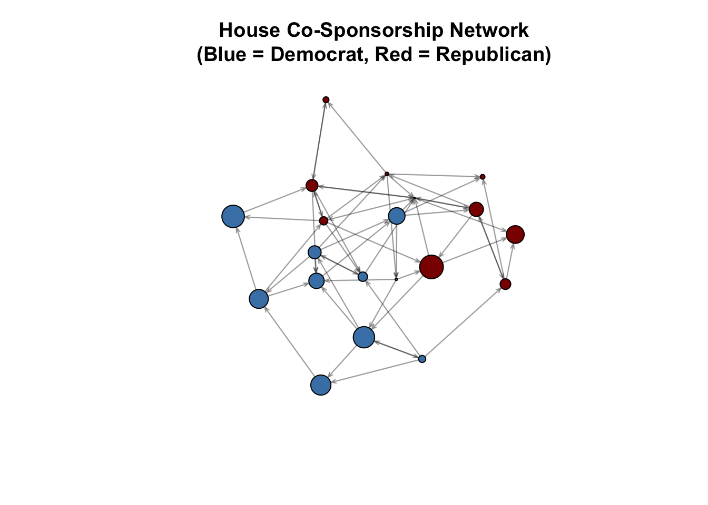
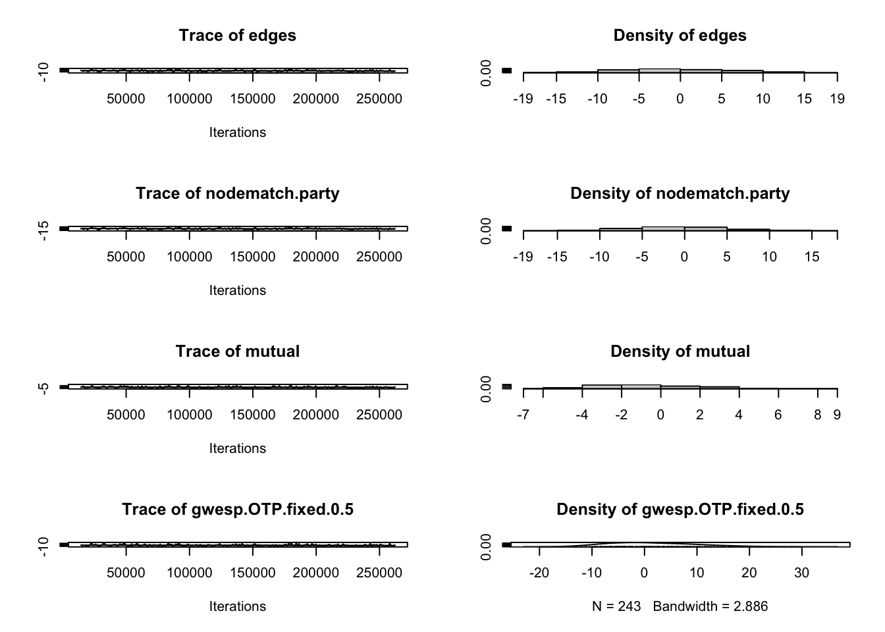

library(tidyverse)
library(network)
library(ergm)
set.seed(12345)Fitting ERGMs to Real Networks
Using MCMC Simulation for Congressional Co-Sponsorship
ERGM
Network analysis
MCMC
Simulation
The Computational Challenge
In the previous post, we worked with a 3-node network where we could enumerate all 64 possible networks. We calculated the probability of each one, and then randomly sampled one according to those probabilities.
But what happens when we study real political networks?
- U.S. Senate (100 senators): \(2^{4950}\) possible networks (that’s a 1 followed by 1,490 zeros!)
- U.S. House (435 representatives): \(2^{94395}\) possible networks (incomprehensibly large)
- State legislature (even 50 members): \(2^{1225}\) possible networks
We cannot enumerate all possible networks. The numbers are astronomically large. We need a different approach: simulation.
Our Example: Congressional Co-Sponsorship
Let’s study how members of Congress collaborate on legislation. When Representative Smith co-sponsors Representative Jones’ bill, they form a tie. This creates a network of legislative collaboration.
Research questions we might ask:
- Do members of the same party co-sponsor together more often?
- Is co-sponsorship reciprocal? (If A co-sponsors B’s bills, does B co-sponsor A’s?)
- Do legislators form tight collaboration clusters (triangles of mutual support)?
- Does seniority matter for attracting co-sponsors?
We’ll use a synthetic dataset of 20 House members to demonstrate how to fit ERGMs when enumeration is impossible.
Step 1: Load and Examine the Network
Let’s create a realistic co-sponsorship network for 20 House members:
# Create a network of 20 House members
n_members <- 20
# Node attributes
member_data <- tibble(
name = paste0("Rep_", 1:n_members),
party = rep(c("D", "R"), each = n_members/2), # 10 Democrats, 10 Republicans
seniority = sample(1:20, n_members, replace = FALSE) # Years in Congress
)
# Create the network object
house_net <- network(n_members, directed = TRUE)
# Add vertex attributes
set.vertex.attribute(house_net, "party", member_data$party)
set.vertex.attribute(house_net, "seniority", member_data$seniority)
set.vertex.attribute(house_net, "name", member_data$name)
# Simulate some realistic co-sponsorship ties
# We'll create ties based on party and reciprocity
set.seed(12345)
for(i in 1:n_members) {
for(j in 1:n_members) {
if(i != j) {
party_match <- member_data$party[i] == member_data$party[j]
# Higher probability if same party
prob <- ifelse(party_match, 0.25, 0.05)
if(runif(1) < prob) {
house_net[i, j] <- 1
}
}
}
}Understanding our network:
- 20 nodes: Each represents a House member
- Directed ties: If Rep_1 → Rep_2, it means Rep_1 co-sponsors Rep_2’s bills
- Attributes: Each member has a party (D or R) and seniority (years in Congress)
# Visualize the network
plot(house_net,
vertex.col = ifelse(member_data$party == "D", "steelblue", "darkred"),
vertex.cex = member_data$seniority / 5,
main = "House Co-Sponsorship Network\n(Blue = Democrat, Red = Republican)",
edge.col = rgb(0, 0, 0, 0.3))
What do we see?
Members of the same party (same color) appear to co-sponsor together more often. In fact, by design, members of the same party have a 25% chance of co-sponsoring bills together. Members of opposite parties have only 5% chance of doing so. But we need ERGMs to rigorously identify and test this, and account for other factors.
Step 2: The Impossible Task of Enumeration
For our 20-member network, there are \(2^{380}\) possible networks (20 × 19 = 380 possible directed ties).
The fundamental problem: We cannot calculate the normalizing constant κ(θ) by summing over all possible networks because there are too many.
The solution: Instead of calculating κ(θ) exactly, we estimate it using simulation.
Step 3: Understanding MCMC Simulation
MCMC stands for “Markov Chain Monte Carlo.” Let’s break down what this means.
The core idea:
Instead of looking at ALL possible networks (impossible), we’ll:
- Start with our observed network
- Make small random changes (add a tie, delete a tie) based on important features and their parameters
- After each change, decide: “Is this new network more or less probable given my parameters?”
- Keep changes that lead to more probable networks (and sometimes keep changes that don’t, to explore broadly)
- Repeat thousands of times
After many iterations, we’ll have a sample of networks that represents what networks look like under our parameters. We use this sample to estimate the normalizing constant.
Let’s see this in action with a simple example:
Imagine we have some parameters in mind: β₀ = -3.0 (sparse networks), β₁ = 2.0 (same-party pairs more likely). Let’s manually walk through two MCMC steps.
# Function to calculate network score given parameters
calculate_score <- function(net, beta_edges, beta_party) {
n_edges <- network.edgecount(net)
# Count same-party ties
party_vec <- get.vertex.attribute(net, "party")
n_party_match <- 0
for(i in 1:network.size(net)) {
for(j in 1:network.size(net)) {
if(i != j && net[i,j] == 1) {
if(party_vec[i] == party_vec[j]) {
n_party_match <- n_party_match + 1
}
}
}
}
score <- beta_edges * n_edges + beta_party * n_party_match
return(list(score = score, edges = n_edges, party_match = n_party_match))
}
# Our hypothetical parameters
beta_edges <- -3.0
beta_party <- 2.0MCMC simulation:
# STEP 0: Calculate score for observed network
current_net <- house_net
current_stats <- calculate_score(current_net, beta_edges, beta_party)Starting with the observed network:
- Edges: 57
- Same-party ties: 42
- Score: -87
# STEP 1: Propose a change - randomly toggle one tie
set.seed(111)
# Pick a random pair
i <- sample(1:network.size(current_net), 1)
j <- sample((1:network.size(current_net))[-i], 1)
# Create proposed network
proposed_net1 <- current_net
proposed_net1[i, j] <- 1 - proposed_net1[i, j] # Flip tie (0→1 or 1→0)
proposed_stats1 <- calculate_score(proposed_net1, beta_edges, beta_party)
party_vec <- get.vertex.attribute(house_net, "party")
change_type <- ifelse(current_net[i,j] == 0, "ADD", "REMOVE")
party_info <- sprintf("(%s-%s)", party_vec[i], party_vec[j])Propose to REMOVE 14→20 (R-R). This would result in the following changes to the network:
- Edges: 57 → 56
- Same-party ties: 42 → 41
- Score: -87 → -86 (change: 1 point)
# Decide whether to accept
score_diff <- proposed_stats1$score - current_stats$score
accept_prob <- min(1, exp(score_diff))Acceptance probability of 1.
Next, we take this new network and randomly select a tie to toggle.
# STEP 2: Propose another change
set.seed(222)
i <- sample(1:network.size(current_net), 1)
j <- sample((1:network.size(current_net))[-i], 1)
proposed_net2 <- proposed_net1
proposed_net2[i, j] <- 1 - proposed_net2[i, j]
proposed_stats2 <- calculate_score(proposed_net2, beta_edges, beta_party)
change_type <- ifelse(proposed_net1[i,j] == 0, "ADD", "REMOVE")
party_info <- sprintf("(%s-%s)", party_vec[i], party_vec[j])Propose to REMOVE 15→19 (R-R). This would result in the following changes to the network:
- Edges: 56 → 55
- Same-party ties: 41 → 40
- Score: -86 → -85 (change: 1 point)
score_diff <- proposed_stats2$score - proposed_stats1$score
accept_prob <- min(1, exp(score_diff))Acceptance probability of 1.
Key insights:
Changes that INCREASE the score (make network more probable) are always accepted (acceptance probability = 1.0).
Changes that DECREASE the score might still be accepted with probability = exp(score_change). This prevents getting stuck in local optima.
Adding a same-party tie increases both
edgesandparty_match. Effect on score: -3.0(+1) + 2.0(+1) = -1.0 (net decrease).Adding a cross-party tie increases only edges. Effect on score: -3.0(+1) + 2.0(0) = -3.0 (larger decrease).
After thousands of steps, we’ll have a sample of networks that reflects what networks look like under these parameters.
Why “Markov Chain”?
Each new network depends only on the previous network (we make one small change at a time). This creates a “chain” of networks: Network₁ → Network₂ → Network₃ → …
Why “Monte Carlo”?
We use randomness to explore the space of networks. “Monte Carlo” is a fancy name for “using random sampling to estimate things.”
The acceptance rule explained:
- If score increases: Always accept (this network is more probable using the given parameters)
- If score decreases by Δ: Accept with probability exp(Δ)
- Small decrease: High probability of accepting (explore nearby)
- Large decrease: Low probability of accepting (avoid improbable networks)
This balance lets us explore the space of probable networks without getting stuck.
Why not just randomly sample networks?
You might wonder: “Why go through this complicated accept/reject process? Why not just randomly generate networks and use those?”
Here’s the problem. Imagine our parameters say:
- β₀ = -3.0 (networks should be very sparse)
- β₁ = 2.0 (same-party ties strongly preferred)
If we randomly generate networks (flip a coin for each possible tie), we’d get:
- Networks with about 190 ties on average (50% of 380 possible ties)
- These random networks are EXTREMELY improbable under our parameters
- We’d waste computational effort evaluating networks that have essentially zero probability
The key insight: We need to sample networks proportional to their probability.
A concrete analogy:
Suppose you want to estimate the average income in a city.
- Random sampling: Survey 1,000 completely random people. This works!
- ERGM’s challenge: But imagine 99.9% of people earn $0 and only 0.1% earn normal incomes. Random sampling would very frequently give you all zeros, which isn’t useful for understanding the income distribution.
- MCMC solution: Sample people proportional to their income probability. You’d naturally get more samples from the relevant part of the distribution.
For ERGMs, the “relevant part” is networks that are probable under our parameters. MCMC’s accept/reject rule ensures we spend our computational effort where it matters—on networks that could actually occur given our model.
Step 4: Fitting a Simple ERGM
Let’s start with a model that includes both dyadic factors (party) and a structural feature (reciprocity). Because reciprocity creates dependencies between ties, this model requires MCMC—we cannot use simple logistic regression.
# Model 1: Edges + Party homophily + Reciprocity
model1 <- ergm(house_net ~ edges + nodematch("party") + mutual)
summary(model1)Call:
ergm(formula = house_net ~ edges + nodematch("party") + mutual)
Monte Carlo Maximum Likelihood Results:
Estimate Std. Error MCMC % z value Pr(>|z|)
edges -2.5411 0.2725 0 -9.325 < 1e-04 ***
nodematch.party 1.2238 0.3152 0 3.883 0.000103 ***
mutual 0.4740 0.5098 0 0.930 0.352510
---
Signif. codes: 0 '***' 0.001 '**' 0.01 '*' 0.05 '.' 0.1 ' ' 1
Null Deviance: 526.8 on 380 degrees of freedom
Residual Deviance: 301.4 on 377 degrees of freedom
AIC: 307.4 BIC: 319.2 (Smaller is better. MC Std. Err. = 0.07014)Understanding the output:
The ergm() function uses MCMC to estimate parameters. Let’s interpret what we got:
edges: This is like β₀ (baseline). It tells us the overall tendency to form ties. A negative value means ties are generally sparse.nodematch.party: This tells us whether same-party members co-sponsor more. A positive value means “yes, same party increases co-sponsorship.”mutual: This tells us about reciprocity. A positive value means co-sponsorship tends to be mutual—if A co-sponsors B’s bills, B is more likely to co-sponsor A’s bills.
Why this model requires MCMC:
The mutual term creates dependency: the probability of tie B→A depends on whether tie A→B exists. This means we cannot treat each tie independently (which would allow simple logistic regression). We must use MCMC to handle this interdependence between a large number of actors.
What happened behind the scenes?
Fitting an ERGM involves finding the parameters (β values) that make our observed network most probable. But we can’t calculate probabilities exactly because we can’t enumerate all networks. So we use an iterative process:
Start with initial parameter guesses (often all zeros: β₀ = 0, β₁ = 0, β₂ = 0, or those estimated using maximum pseudo-likelihood estimation)
Calculate the sufficient statistics of our observed network:
- Observed edges: count them
- Observed same-party ties: count them
- Observed mutual dyads: count them
For the current parameter values, use MCMC to simulate many networks and calculate their average statistics:
- Average edges across simulated networks
- Average same-party ties across simulated networks
- Average mutual dyads across simulated networks
Compare observed statistics to simulated statistics:
- If observed edges > simulated edges: increase β₀ (make edges more likely)
- If observed edges < simulated edges: decrease β₀ (make edges less likely)
- Same logic for β₁ and same-party ties
- Same logic for β₂ and mutual dyads
Update parameters and repeat steps 3-4
Continue until average of the simulated statistics match observed statistics
Why this works:
When the parameters are “correct” (maximum likelihood estimates), the simulated networks will have the same statistics on average as our observed network. If observed edges = 50 and simulated edges average to 35, we need to increase β₀. If they match at 50 and 50, we’ve found the right parameter!
The computational challenge:
For our 20-member network with structural dependencies, the ergm() function might:
- Try 20-30 different parameter combinations
- For each combination, simulate 1,000-10,000 networks
- Total: 20,000-300,000 network evaluations
This happens in seconds on modern computers, but would be impossible if we tried to enumerate all \(2^{380}\) possible networks!
A simplified example:
Observed network statistics:
- Edges: 57
- Same-party ties: 42
- Mutual dyads: 7
Imagine the algorithm tries these parameter values:
Iteration 1: β₀ = 0.0, β₁ = 0.0, β₂ = 0.0 (starting guess)
Simulated edges: 95 (too many!)
Simulated same-party: 48 (may differ from observed)
Simulated mutual: 12 (may differ from observed)
Therefore: decrease β₀, adjust β₁ and β₂
Iteration 2: β₀ = -1.5, β₁ = 1.0, β₂ = 0.5
Simulated edges: 68 (still too many)
Simulated same-party: 43 (getting closer)
Simulated mutual: 6 (adjusting)
Therefore, decrease β₀ more, adjust others
Iteration 3: β₀ = -2.3, β₁ = 1.4, β₂ = 1.2
Simulated edges: close to 57
Simulated same-party: close to 42
Simulated mutual: close to 7
Therefore, small adjustments
… (continues until convergence) …
Final estimates (from actual model):
- β₀ (edges) = -2.541
- β₁ (same-party) = 1.224
- β₂ (mutual) = 0.474Step 5: Interpreting Parameters
Let’s interpret our results in plain language:
Edges coefficient: -2.541.
- This negative number means co-sponsorship ties are sparse.
- Baseline probability of a tie: 0.073, or 7%.
Same-party coefficient: 1.224.
- This positive number means same-party members co-sponsor more.
- Multiplier effect: exp(1.224), or 3.4.
- Same-party pairs are 3.4 times more likely to co-sponsor (compared to the baseline).
Mutual coefficient: 0.474.
- Positive reciprocity: Co-sponsorship tends to be mutual. This captures the norm of “you scratch my back, I’ll scratch yours” in Congress.
- If A co-sponsors B’s bills, B is 1.61 times more likely to co-sponsor A’s bills (compared to baseline).
Step 6: Checking Model Fit with Simulation
How do we know if our model is good? We simulate networks from the fitted model and compare them to our observed network.
The logic:
- Our fitted model has parameters that define a probability distribution over all networks
- We can use MCMC to draw sample networks from this distribution
- If our model is good, these simulated networks should look like our observed network
# Simulate 100 networks from the fitted model
sim_networks <- simulate(model1, nsim = 100)
# Calculate statistics for simulated networks
sim_stats <- attr(sim_networks, "stats")
# Compare to observed network statistics
obs_edges <- summary(house_net ~ edges)
obs_party <- summary(house_net ~ nodematch("party"))
obs_mutual <- summary(house_net ~ mutual)Goodness of fit:
Observed network statistics:
tibble(
Statistic = c("Edges", "Same-party ties", "Mutual dyads"),
Observed = c(summary(house_net ~ edges), summary(house_net ~ nodematch("party")), summary(house_net ~ mutual)),
Simulated = c(mean(sim_stats[, "edges"]), mean(sim_stats[, "nodematch.party"]), mean(sim_stats[, "mutual"]))
) %>%
knitr::kable()| Statistic | Observed | Simulated |
|---|---|---|
| Edges | 57 | 58.97 |
| Same-party ties | 42 | 42.87 |
| Mutual dyads | 7 | 7.76 |
What are we checking?
If the simulated statistics are close to the observed statistics, our model captures the key features of the network well.
Step 7: Adding Transitivity (Clustering)
Do House members form tight collaboration clusters? If A co-sponsors with B, and B co-sponsors with C, is A more likely to co-sponsor with C?
This is called transitivity or triadic closure—the same structural feature we studied with conflict networks, but here it might be positive (legislators form caucuses and working groups).
# Model 3: Add transitivity
# Note: gwesp is a "geometrically weighted edgewise shared partner" term
# It's a more stable way to model transitivity than counting all triangles
model2 <- ergm(house_net ~ edges + nodematch("party") + mutual + gwesp(0.5, fixed = TRUE))
summary(model2)Call:
ergm(formula = house_net ~ edges + nodematch("party") + mutual +
gwesp(0.5, fixed = TRUE))
Monte Carlo Maximum Likelihood Results:
Estimate Std. Error MCMC % z value Pr(>|z|)
edges -2.4163 0.3399 0 -7.109 < 1e-04 ***
nodematch.party 1.2879 0.3588 0 3.589 0.000332 ***
mutual 0.4578 0.5130 0 0.892 0.372228
gwesp.OTP.fixed.0.5 -0.1585 0.2351 0 -0.674 0.500091
---
Signif. codes: 0 '***' 0.001 '**' 0.01 '*' 0.05 '.' 0.1 ' ' 1
Null Deviance: 526.8 on 380 degrees of freedom
Residual Deviance: 301.3 on 376 degrees of freedom
AIC: 309.3 BIC: 325 (Smaller is better. MC Std. Err. = 0.07575)Understanding gwesp:
The gwesp term measures transitivity in a sophisticated way. Instead of simply counting triangles (which can cause computational problems), it weights different types of shared partnerships.
- Positive gwesp: Legislators form clusters (if A↔︎B and B↔︎C, then A↔︎C is more likely)
- Negative gwesp: Legislators avoid complex collaboration patterns
GWESP coefficient: -0.159.
- Negative transitivity: Legislators avoid dense collaboration clusters.
- However, this coefficient is not statistically significant.
- This makes sense: the only feature we included when we created this network was party matching.
Step 8: Understanding MCMC Diagnostics
When fitting ERGMs with MCMC, we need to check that the simulation converged properly.
What does “convergence” mean?
Imagine you’re exploring a vast landscape in the fog, trying to map out the terrain. You take random steps and record what you find. “Convergence” means you’ve explored enough that you have a good sense of the whole landscape—you’re not stuck in one corner or wandering aimlessly.
For MCMC, convergence means:
- The chain has explored the space of likely networks adequately
- The parameter estimates have stabilized
- We can trust the results
We can check for convergence in the long output provided by mcmc.diagnostics():
# Check MCMC diagnostics
mcmc.diagnostics(model2)
Sample statistics summary:
Iterations = 14336:262144
Thinning interval = 1024
Number of chains = 1
Sample size per chain = 243
1. Empirical mean and standard deviation for each variable,
plus standard error of the mean:
Mean SD Naive SE Time-series SE
edges -0.1893 6.832 0.4383 0.4496
nodematch.party -0.1152 5.691 0.3651 0.4338
mutual -0.2181 2.535 0.1626 0.1983
gwesp.OTP.fixed.0.5 1.5174 8.169 0.5240 0.5240
2. Quantiles for each variable:
2.5% 25% 50% 75% 97.5%
edges -13.00 -5.000 -1.0000 5.000 12.95
nodematch.party -10.00 -4.000 0.0000 4.000 11.00
mutual -4.00 -2.000 0.0000 1.000 5.00
gwesp.OTP.fixed.0.5 -11.37 -4.713 0.3935 7.074 18.35
Are sample statistics significantly different from observed?
edges nodematch.party mutual gwesp.OTP.fixed.0.5
diff. -0.1893004 -0.1152263 -0.2181070 1.517376917
test stat. -0.4210715 -0.2655990 -1.0998290 2.895541986
P-val. 0.6737029 0.7905481 0.2714067 0.003785044
(Omni)
diff. NA
test stat. 3.971829e+01
P-val. 2.356427e-07
Sample statistics cross-correlations:
edges nodematch.party mutual gwesp.OTP.fixed.0.5
edges 1.0000000 0.8499789 0.5851644 0.8455051
nodematch.party 0.8499789 1.0000000 0.6271511 0.7745410
mutual 0.5851644 0.6271511 1.0000000 0.5053557
gwesp.OTP.fixed.0.5 0.8455051 0.7745410 0.5053557 1.0000000
Sample statistics auto-correlation:
Chain 1
edges nodematch.party mutual gwesp.OTP.fixed.0.5
Lag 0 1.000000000 1.00000000 1.00000000 1.000000000
Lag 1024 0.093994006 0.18212609 0.19376684 0.086520670
Lag 2048 -0.004748367 0.07115234 -0.01070746 0.001059334
Lag 3072 0.081117030 0.11161007 0.09712974 0.012278959
Lag 4096 -0.128161317 -0.10894714 -0.03885801 -0.120461001
Lag 5120 -0.042044941 -0.08834113 -0.03245954 -0.051045473
Sample statistics burn-in diagnostic (Geweke):
Chain 1
Fraction in 1st window = 0.1
Fraction in 2nd window = 0.5
edges nodematch.party mutual gwesp.OTP.fixed.0.5
0.9022633 0.6309148 0.9914133 1.0159278
Individual P-values (lower = worse):
edges nodematch.party mutual gwesp.OTP.fixed.0.5
0.3669170 0.5280962 0.3214838 0.3096637
Joint P-value (lower = worse): 0.8258765
Note: MCMC diagnostics shown here are from the last round of
simulation, prior to computation of final parameter estimates.
Because the final estimates are refinements of those used for this
simulation run, these diagnostics may understate model performance.
To directly assess the performance of the final model on in-model
statistics, please use the GOF command: gof(ergmFitObject,
GOF=~model).Sample statistics summary interpretation:
Iterations = 14336:262144: This is the range of iterations that were used to calculate the reported sample statistics.- The statistics summarized in the diagnostic report were calculated using the 247,809 samples collected from iteration 14,336 up to and including 262,144.
- The MCMC sampler ran for 14,335 iterations before the burn-in period ended and the sampling for statistics began.
Thinning interval = 1024: The MCMC algorithm only records the state of the network once every 1,024 steps/iterations.- Why? To obtain a set of recorded samples that are as close to independent as possible. Successive states of an MCMC chain are often highly correlated (i.e., the state at iteration \(t\) is very similar to the state at iteration \(t+1\)). High autocorrelation means the chain is exploring the sample space slowly, and the samples provide redundant information. By skipping 1,023 steps between each recorded sample, the chain has more time to move to a statistically independent region of the distribution space.
Number of chains = 1: Only one MCMC simulation was executed and its output was used for the entire analysis.Sample size per chain = 243: The final, usable number of independent samples that were recorded for the purpose of inference and diagnostics after accounting for burn-in and thinning.
Sample statistic distributions:
The empirical mean and standard deviation for each variable, plus standard error of the mean shows the center and spread of differences between the statistics for each 243 sampled networks and the observed network. For example, a mean of -0.1893 for the edges variable indicates that the sampled networks had, on average, 0.1893 fewer edges than the observed network.
The diagnostic summary then asks “Are sample statistics significantly different from observed?” Ideally, they are not (we get large test statistics and p-values). This is the case for all of our variables except for transitivity, which is reflected in its non-significance in our model.
The summary also includes sample statistics auto-correlation across all chains (here, our one chain). Cross-correlation measures the correlation between the sequence of samples for statistic \(A\) and the sequence of samples for statistic \(B\). High positive cross-correlation means that as the MCMC chain moves to a network state with a high value of statistic A, it also tends to move to a network state with a high value of statistic B. The two statistics move in tandem. For example, edges aand nodematch.party are highly positively correlated. This means that the chain struggles to explore networks with many edges but few same party matches, or vice-versa. Warning: high cross-correlations in the sample statistics are a sign of poor mixing and can lead to degeneracy issues in the model.
Finally, the summary includes – in the Geweke diagnostic – a measure of whether the MCMC chain has reached its stationary distribution and is therefore sampling from the target distribution (the ERGM model space). It helps determine if the specified burn-in period was sufficient. This works by dividing the chain into different segments and then asking if the mean parameters of each section are statistically significantly different from each other. The first set of numbers (for example, edges: 0.9022633) is the mean parameter’s Z-score. The second set of numbers (for example, edges: 0.3669170) is the corresponding p-value. Ideally, the segments are not significantly different from each other.
If diagnostics look good, we can trust our parameter estimates!
Step 9: Comparing Models
Which model best explains co-sponsorship patterns? We can compare models using information criteria:
# Compare models using AIC (Akaike Information Criterion)
# Lower AIC = better model
aic1 <- AIC(model1)
aic2 <- AIC(model2)
tibble(
model = c("Model 1 (edges + party)", "Model 3 (+ transitivity)"),
AIC = c(aic1, aic2)
) %>%
knitr::kable()| model | AIC |
|---|---|
| Model 1 (edges + party) | 307.3889 |
| Model 3 (+ transitivity) | 309.2818 |
The best model according to this measure is model 1.
Interpreting AIC:
- Lower AIC = better balance of fit and complexity
- A difference of 2+ points suggests meaningful improvement
- The best model captures the data patterns most efficiently
The Power of MCMC
What we accomplished:
Instead of enumerating 2^380 impossible networks, we:
- Used simulation to estimate the normalizing constant
- Fitted complex models with structural dependencies
- Tested hypotheses about party, reciprocity, and clustering
- Assessed model fit through simulation
Why this matters:
MCMC makes ERGMs practical for real political networks. We can now study:
- Legislative collaboration in Congress (435 members)
- International alliance networks (195 countries)
- State-level policy diffusion (50 states)
- Social movements and organizational ties
The logic remains the same as our 3-node example—we’re modeling probability distributions over all possible networks that could form between our actors. MCMC just gives us the computational tools to apply this logic to realistic political science questions.
Key Takeaways
From enumeration to simulation:
- Small networks: Calculate probabilities exactly by enumerating all possibilities
- Large networks: Use MCMC to estimate probabilities through simulation
The ERGM framework stays the same:
- Parameters (β values) weight different features
- Networks with more “desirable” features get higher probability
- We find parameters that make our observed network most likely
What MCMC adds:
- Computational feasibility for real networks
- Ability to include complex structural features
- Goodness-of-fit testing through simulation
- Model comparison tools
The fundamental insight:
Political relationships are interdependent. ERGMs with MCMC let us rigorously study these interdependencies in real-world networks—whether studying how House members form legislative coalitions, how countries build alliance networks, or how policies diffuse across states.